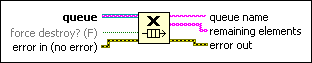
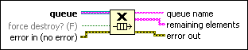

Release Queue Function
Owning Palette: Queue Operations Functions
Requires: Base Development System
Releases a reference to a queue.

 Add to the block diagram Add to the block diagram |
 Find on the palette Find on the palette |
Owning Palette: Queue Operations Functions
Requires: Base Development System
Releases a reference to a queue.

| Add to the block diagram |
Find on the palette |
 |
queue is a reference to a queue. Use the Obtain Queue function to obtain a queue reference. |
 |
force destroy? indicates whether to destroy the queue. If FALSE (default) and you want to destroy the queue, either call the Release Queue function a number of times equal to the number of times you obtained a reference to the queue or stop all VIs using the queue reference. If TRUE, the function destroys the queue and you do not have to call the function multiple times or stop all VIs using the queue reference. Destroying the queue invalidates all references to the queue. |
 |
error in describes error conditions that occur before this node runs. With the following exception, this input provides standard error in functionality.
This node runs normally even if an error occurred before this node runs. |
 |
queue name is the name of the queue. |
 |
remaining elements is the array of elements that were in the queue before the function released the queue. The first element in the array is the element from the front of the queue and the last element in the array is the element from the back of the queue. This data type changes to match the subtype of queue. |
 |
error out contains error information. This output provides standard error out functionality. |
You can use the Obtain Queue function to obtain a reference to the same queue with the same name multiple times. To destroy a queue, call the Release Queue function a number of times equal to the number of times you obtained a reference to the queue or stop all VIs using the queue reference.
If force destroy? is TRUE, this function releases all references to the queue and destroys the queue.
Any Enqueue Element, Enqueue Element at Opposite End, Preview Queue Element, and Dequeue Element functions waiting on the queue time out and return error code 1122.
Refer to the Queue Overflow and Underflow VI in the labview\examples\Synchronization\Queue directory for an example of using the Release Queue function.
 Open example Find related examples
Open example Find related examples